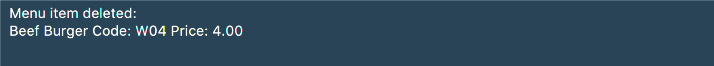
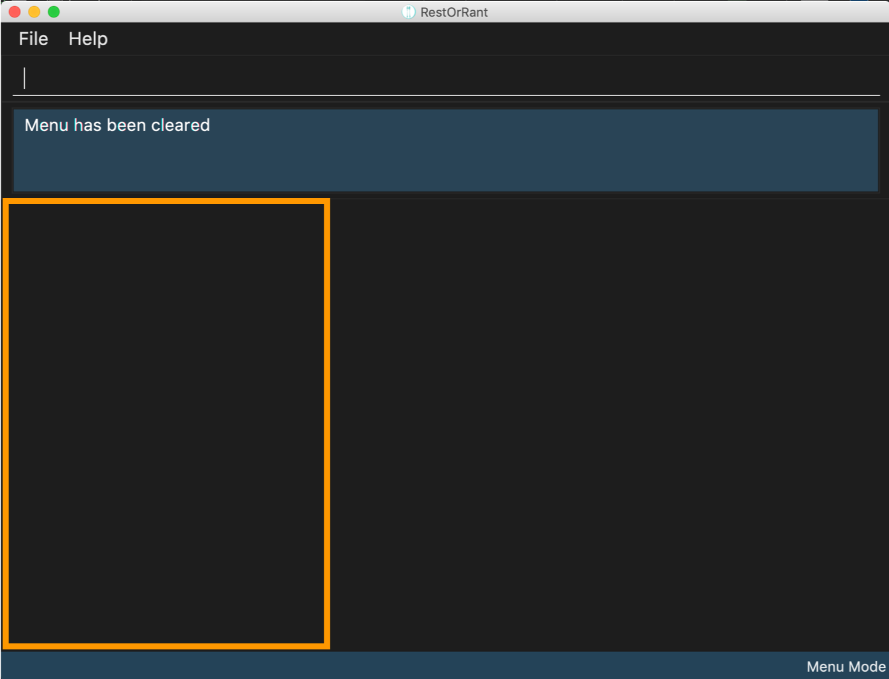

About the project
My team and I were given a basic command line interface addressbook program and were tasked to enhance or morph it for our Software Engineering module project. We decided to morph it into a restaurant management system called RestOrRant. With RestOrRant, the restaurant’s front-end operations can be streamlined via automation to maximise efficiency for waiters and cashiers. RestOrRant allows restaurant managers to manage tables (availabilities and lists of orders), orders (whether they have been served and calculation of the bill), menu (updates to the menu) and statistics (daily, monthly and yearly revenue).
My role was to implement the menu feature end-to-end (across UI, Model, Logic and Storage components). The following sections elaborate on my enhancements as well as the relevant updates to the User Guide and Developer Guide to reflect these enhancements.
Summary of contributions
This section contains a summary of my contributions to the code, documentation, and other minor enhancements made to RestOrRant.
-
Major enhancement: I added the ability to add menu items to and delete menu items from the menu.
-
What it does:
-
addToMenu: TheaddToMenucommand allows the user to add a menu item to the menu. The menu item must be specified with an item code, name and price using labels such asc/for code,n/for name andp/for price. For example,addToMenu c/W09 n/Chicken Wings p/3.20would add the item Chicken wings with code W09 and price 3.20 to the menu. -
deleteFromMenu: ThedeleteFromMenucommand allows the user to delete a menu item from the menu, but here the menu item is only identified by its code. For example,deleteFromMenu W09would delete the menu item with the code W09 from the menu.
-
-
Justification: These commands in the menu feature would allow restaurant managers to edit the menu according to the ingredients they have available each day. The menu is also stored internally, and thus there would be no need to re-enter all the menu items but instead only add or remove a few menu items each day.
-
Highlights: This enhancement works well with existing as well as future commands. The format of labelling for the
addToMenucommand was used for ease of distinguishing the name, code and price of the menu items. With the labels, users need not follow the format of keying in name, code then price and the command would work fine. However, the labelling approach was not needed for thedeleteFromMenucommand as the code is the only input needed. -
Credits: The addressbook given to us had originally used the labelling format for adding people to the addressbook, which is where I got my inspiration from for the
addToMenucommand.
-
-
Minor enhancement: I added the ability to store the quantity ordered for each menu item in the menu, and update the quantity ordered every time the bill is called, (implementation of
updateMenuItemQuantitymethod).-
What it does: When a menu item is added for the first time, the quantity is automatically set to zero. It then updates from zero every time the orders are confirmed (i.e. when the bill is called).
-
Justification: This enhancement is to aid the future implementation of finding the most popular item in the menu, by retrieving the menu item with the largest number of quantity ordered.
-
Highlights: This enhancement works well with existing as well as future commands, and would help in future implementation of finding out whether an item is sold out as well.
-
Other contributions:
-
Project Management:
-
There were a total of 2 releases, from version 1.2.1 to 1.3 and I managed both releases on GitHub.
-
I was also in charge of scheduling and tracking, and managed the tracking of issues and milestones on GitHub.
-
-
Documentation:
-
Updated the User Guide and Developer Guide to reflect the commands related to the menu feature.
-
-
Community:
-
Offered suggestions on improvements to other teams' documentation in the class.
-
Contributions to the User Guide
We had to make changes to the original addressbook User Guide with the instructions relevant to RestOrRant. The following is an excerpt from our RestOrRant User Guide to show the updates that I have made for the menu features.
Menu Mode
In Menu Mode, you can track all updates to the menu, and the application will display the current items on the menu.

This mode only uses the side panel, to avoid any confusion and for ease of use. The function is as follows:
-
Menu Panel: This panel displays the currently available items on the menu along with their item codes and price.
Here are the commands that you can use in this mode to efficiently handle the menu in your restaurant.
Adding menu items to the menu : addToMenu
If your restaurant has a new dish you would like to make available for your customers, this command allows you to add that item to the menu by specifying the item code, name and price.
Order of the input parameters does not matter (i.e. any permutation of c/ITEM_CODE n/ITEM_NAME p/ITEM_PRICE can be
keyed in and the command will work as intended).
|
| RestOrRant does not allow you to add two items with the same item code, they are considered to be the same item. Make sure to have different item codes for all your available dishes! |
|
You will see a success message in the Results Display and the updated menu with the new item will be displayed in the Menu Panel. |
For example, the menu initially has 15 items as shown below. 
Suppose you would like to add a Chocolate Ice Cream to the menu. After executing 
The Menu Panel will also be updated and you will now see 16 items displayed. As seen in the image below, a new 16th item with code W16, name Chocolate Ice Cream and price of 1.50 has been added to the menu. 
|
Deleting menu items from the menu : deleteFromMenu
Suppose you now decide you no longer want to sell a particular dish, and would like to make it unavailable for customers. You can do so by specifying the item code of the item you wish to remove.
You can only delete item codes that already exist in the menu. You can add items to the menu using the addToMenu command.The restaurant must be empty (there should not be any occupied tables). |
| Deleting an item from the menu would also erase the quantity ordered associated with that item, and this item will not show up on the Menu Panels in all modes. If you choose to add the same item to the menu again, it would be considered as a new item with quantity ordered starting from zero. |
|
You will see a success message in the Results Display and the displayed menu on the Menu Panel would have the specified item removed. |
For example, the menu initially has 6 items as shown below.
Suppose you would like to delete the Beef Burger from the menu. After executing

The Menu Panel will also be updated and you will now see 5 items displayed. As seen in the image below, Beef Burger has been deleted from the menu. 
|
Clearing all the items in the menu : clearMenu
This command allows you to clear all the items from the menu, if you ever need to start afresh.
|
The menu must not be empty (one or more items should exist in the menu). The restaurant must be empty (there should not be any occupied tables). |
| This command is irreversible and will not save the menu under restaurant statistics. |
|
You will see a success message in the Results Display and the Menu Panel will be empty. |
For example, the menu initially has 6 items as shown below.
After executing The Menu Panel will now be empty, as seen in the image below.

|
Changing an item’s availability : toggleAvailability (Coming in v2.0)
This command allows you to change an item’s availability by specifying the item code.
| All added menu items are available by default. |
| Calling this command on an available item would mark the item as unavailable, whereas calling this command on an unavailable item would mark it as available again. |
| The specified item should exist in the menu. |
|
You will see a success message in the Results Display and the background of the menu item would turn dark. |
For example, say Lobster Burger has just become sold out. |
Contributions to the Developer Guide
We also had to make changes to the original addressbook Developer Guide as our implementation had major changes in the UI, logic, model and storage components. The following is an excerpt from our RestOrRant Developer Guide to show the updates that I have made for the menu features as well as the storage component.
Adding to menu
The user may want to add new menu items to the menu and this can be done with the addToMenu command.
Current Implementation
The menu items in the menu are stored as a list. Adding a new menu item to the menu is done by adding to the existing list.
The command is read as a text string from the command box in the UI and then is executed by calling MainWindow#executeCommand(), which passes this string to the Logic component by calling Logic#execute().
The sequence diagram for interactions between the Logic, Model and Storage components when a user executes the addToMenu command is shown below.
addToMenu commandThe Logic#execute() method then creates a command from the text string input by parsing the string to identify the command word (done by the RestOrRantParser#parse() method) and other parameters, in this case the attributes of the MenuItem (done by the AddToMenuCommandParser#parse() method, omitted from the sequence diagram). After parsing, the text string is then converted to Name, Code, and Price and a new MenuItem is created with these attributes and then passed to Model component.
In the Model component, firstly the validity of the Name, Code and Price of the MenuItem is checked. The three attributes must follow the specified format for them to be valid. The MenuItem is only added to the UniqueMenuItemList after ensuring that the same menu item does not already exist in the list. For this to be true, the new menu item should not have the same Code as any other item in the list.
After adding to the list in the Model component, the Menu#indicateModified() method is called, which then triggers the Logic component to save the state of the menu, by calling Storage#saveMenu().
The User Interface also updated by adding the new menu item to the list panel.
| This action can only be done in Menu Mode. If not in Menu Mode currently , users can first change mode by typing switching over to Menu Mode. |
Design Considerations
| Aspect | Alternative 1 | Alternative 2 |
|---|---|---|
Saving changes from addition of menu items |
Save only the menu, using the Menu#indicateModified() and Storage#saveMenu() methods. We decided to choose this option because we realise that there would be bigger performance issues such as lagging in the long run if we were to save every instance of the restaurant for every update to each feature. |
Save the whole restaurant instance, by just having two methods (RestOrRant#indicateModified() and Storage#saveRestOrRant()) overall. |